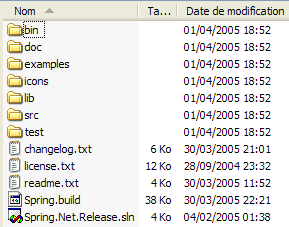
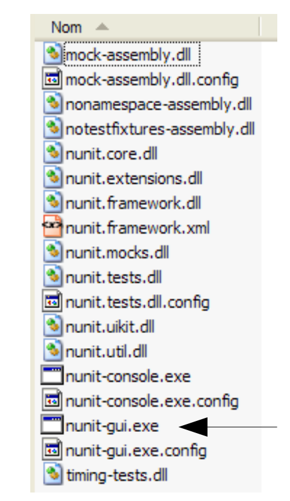
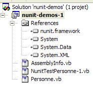
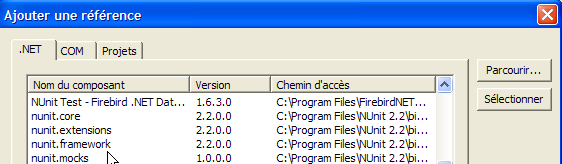
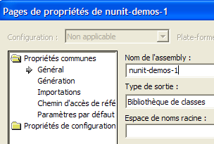
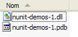

8. الملاحق
8.1. أين يمكنني العثور على Spring؟
الموقع الرئيسي لـ Spring هو [http://www.springframework.org/]. هذا هو الموقع الخاص بإصدار Java. أما إصدار .NET، الذي لا يزال قيد التطوير (أبريل 2005)، فيمكن العثور عليه على [http://www.springframework.net/].

موقع التنزيل موجود على [SourceForge]:

بمجرد تنزيل ملف zip أعلاه، قم بفك ضغطه:

في هذا المستند، لم نستخدم سوى محتويات مجلد [bin]:

في مشروع Visual Studio الذي يستخدم Spring، يجب عليك دائمًا القيام بأمرين:
- وضع الملفات المذكورة أعلاه في مجلد [bin] الخاص بالمشروع
- إضافة مرجع إلى تجميع [Spring.Core.dll] إلى المشروع
8.2. أين يمكنك العثور على NUnit؟
الموقع الإلكتروني الرئيسي لـ NUnit هو [http://www.nunit.org/]. الإصدار المتاح في أبريل 2005 هو 2.2.0:

قم بتنزيل هذا الإصدار وتثبيته. يؤدي التثبيت إلى إنشاء مجلد يحتوي على واجهة الاختبار الرسومية:
الجزء المثير للاهتمام موجود في مجلد [bin]:


يشير السهم أعلاه إلى أداة الاختبار الرسومية. أضاف التثبيت أيضًا عناصر جديدة إلى مستودع تجميع Visual Studio، والتي سنستكشفها الآن.
لنقم بإنشاء مشروع Visual Studio التالي:
توجد الفئة قيد الاختبار في [Person.vb]:

Public Class Personne
' private fields
Private _nom As String
Private _age As Integer
' default builder
Public Sub New()
End Sub
' properties associated with private fields
Public Property nom() As String
Get
Return _nom
End Get
Set(ByVal Value As String)
_nom = Value
End Set
End Property
Public Property age() As Integer
Get
Return _age
End Get
Set(ByVal Value As Integer)
_age = Value
End Set
End Property
' identity chain
Public Overrides Function tostring() As String
Return String.Format("[{0},{1}]", nom, age)
End Function
' init method
Public Sub init()
Console.WriteLine("init personne {0}", Me.ToString)
End Sub
' close method
Public Sub close()
Console.WriteLine("destroy personne {0}", Me.ToString)
End Sub
End Class
توجد فئة الاختبار في [NunitTestPersonne-1.vb]:
Imports System
Imports NUnit.Framework
<TestFixture()> _
Public Class NunitTestPersonne
' object tested
Private personne1 As Personne
<SetUp()> _
Public Sub init()
' create an instance of Person
personne1 = New Personne
' log
Console.WriteLine("setup test")
End Sub
<Test()> _
Public Sub demo()
' log screen
Console.WriteLine("début test")
' init person1
With personne1
.nom = "paul"
.age = 10
End With
' tests
Assert.AreEqual("paul", personne1.nom)
Assert.AreEqual(10, personne1.age)
' log screen
Console.WriteLine("fin test")
End Sub
<TearDown()> _
Public Sub destroy()
' follow-up
Console.WriteLine("teardown test")
End Sub
End Class
هناك عدة أمور يجب ملاحظتها:
- يتم تعيين سمات للطرق مثل <Setup()> و<TearDown()>، ...
- لكي يتم التعرف على هذه السمات، يجب أن يكون ما يلي صحيحًا:
- يجب أن يشير المشروع إلى التجميع [nunit.framework.dll]
- تستورد فئة الاختبار مساحة الاسم [NUnit.Framework]
تتم إضافة المرجع بالنقر بزر الماوس الأيمن على [References] في مستكشف الحلول:
 |  |

يجب أن يظهر التجميع [nunit.framework.dll] في القائمة إذا تم تثبيت [NUnit] بنجاح. ما عليك سوى النقر المزدوج على التجميع لإضافته إلى المشروع:

بمجرد الانتهاء من ذلك، يجب أن تستورد فئة الاختبار [NunitTestPersonne] مساحة الاسم [NUnit.Framework]:
وبذلك يتم التعرف على سمات فئة الاختبار [NunitTestPersonne].
- تحدد السمة <Test()> الطريقة المراد اختبارها
- تحدد السمة <Setup()> الطريقة التي سيتم تنفيذها قبل كل طريقة يتم اختبارها
- تحدد السمة <TearDown()> الطريقة التي سيتم تنفيذها بعد كل طريقة يتم اختبارها
- تسمح لك طريقة Assert.AreEqual باختبار تساوي كيانين. هناك العديد من الطرق الأخرى من النوع Assert.xx.
- توقف أداة NUnit تنفيذ الطريقة التي يتم اختبارها بمجرد فشل طريقة [Assert] وتعرض رسالة خطأ. وإلا، فإنها تعرض رسالة نجاح.
دعونا نُهيئ مشروعنا لإنشاء مكتبة DLL:

سيتم تسمية ملف DLL الذي تم إنشاؤه [nunit-demos-1.dll] وسيتم وضعه افتراضيًا في مجلد [bin] الخاص بالمشروع. لنقم ببناء مشروعنا. نحصل على ما يلي في مجلد [bin]:

الآن دعونا نطلق أداة الاختبار الرسومية Nunit. تذكر أنها موجودة في <Nunit>\bin واسمها [nunit-gui.exe]. يشير <Nunit> إلى مجلد تثبيت [Nunit]. نحصل على الواجهة التالية:

دعونا نستخدم خيار القائمة [File/Open] لتحميل ملف DLL [nunit-demos-1.dll] من مشروعنا:

يمكن لـ [Nunit] اكتشاف فئات الاختبار الموجودة في ملف DLL الذي تم تحميله تلقائيًا. هنا، تجد فئة [NunitTestPersonne]. ثم تعرض جميع أساليب الفئة التي تحتوي على السمة <Test()>. يتيح لك زر [Run] تشغيل الاختبارات على الكائن المحدد. إذا كانت هذه هي فئة [NunitTestPersonne]، فسيتم اختبار جميع الأساليب المعروضة. يمكنك اختبار طريقة معينة عن طريق تحديدها والنقر على [Run]. دعونا نقوم بتشغيل الفئة:

يُشار إلى نجاح الاختبار على طريقة ما بنقطة خضراء بجوار الطريقة في النافذة اليسرى. ويُشار إلى فشل الاختبار بنقطة حمراء.
تعرض نافذة [Console.Out] على اليمين مخرجات الشاشة الناتجة عن الطرق التي تم اختبارها. هنا، أردنا متابعة تقدم الاختبار:
- يُظهر السطر 1 أن طريقة السمة <Setup()> يتم تنفيذها قبل الاختبار
- يتم إنشاء السطرين 2 و3 بواسطة الطريقة [demo] التي يتم اختبارها (انظر الكود أعلاه)
- يُظهر السطر 4 أن طريقة السمة <TearDown()> يتم تنفيذها بعد الاختبار